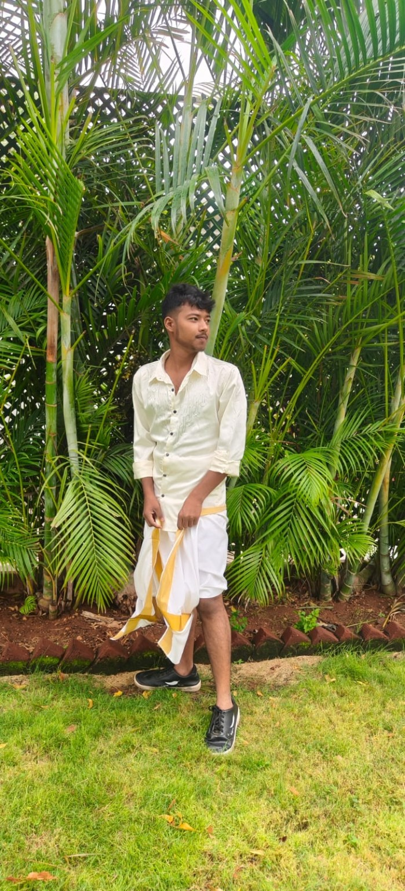

01C · CONSOLE APP
✓
Mini Attendance Tracker
A simple student attendance tool to add student records, mark attendance and view attendance summaries.
CStructuresFile handling
Starter concept↗
Hello, I'm
A B.Sc. Computer Science student at KG College of Arts and Science, passionate about technology, travel, NCC and the Indian Armed Forces.
*Personal journey details provided by Kathiravan.
A LITTLE ABOUT ME
I'm Kathiravan, a Computer Science student from Kanuvai, Coimbatore. I enjoy learning programming and discovering how technology can solve real-world problems.
NCC has helped shape my discipline, teamwork and sense of responsibility. I've taken part in three camps, including one international camp, and I have a deep interest in the Indian Army.
Exploring new places has broadened my perspective. I've visited 17 states in India and two countries, and I look forward to learning from more cultures and experiences.
MY EDUCATION
KG College of Arts and Science
Currently in the second year, developing a foundation in programming, web technologies and computer science concepts.
Participated in NCC activities and camps, building discipline, teamwork and a strong interest in national service.
WHAT I'M LEARNING
A growing set of skills I'm practising through coursework and personal learning.
Programming fundamentals
Object-oriented programming
Core programming concepts
Web page structure
Responsive styling
Interactive web pages
SELECTED PROJECT IDEAS
These are starter project concepts for practice, not completed projects yet. Build them and replace this note with your real progress.
A simple student attendance tool to add student records, mark attendance and view attendance summaries.
A console-based system to manage guest details, room availability, bookings and check-outs.
A responsive web app to record expenses, organise spending categories and view a monthly summary.
COURSES & CERTIFICATES
Select a certificate to view it. More certificates can be added later.
Certificate images are displayed as supplied. If a screenshot shows another person's name or phone interface, replace it with the original certificate image before publishing.
MY JOURNEY

Strengthen programming basics and build confidence through regular practice.
Turn classroom knowledge into useful projects and document the work clearly.
Travel, meet people, learn from new experiences and grow through teamwork and NCC.
Continue preparing for a future in technology and explore eligible career opportunities in the Indian Army or Indian Air Force.
VISION & MISSION
To become a skilled software developer and, if eligible, pursue my ambition of serving the nation through the Indian Army or Indian Air Force.
To improve my technical knowledge, build practical projects, maintain discipline through NCC values and prepare responsibly for future career opportunities.
LET'S CONNECT
I'm always interested in learning, collaborating and connecting with people who share a passion for technology and service.
Email me ↗